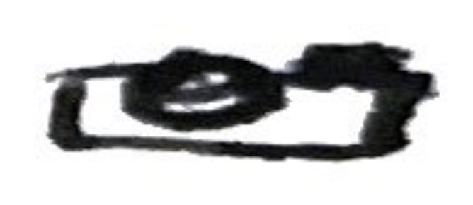

4th June 2024
A Response To: Kirkwall in the Sun
- 3 June 2024
Flying
[pretty photo, well shot] -- propellersI'd love to take a plane to Kirkwall just to watch the propellers! Unfortunately not worth the price. I wonder why they don't use slightly smaller planes? I do like that they emptiness brings about conversation with co-travellers. But perhaps that is you and your easy conversing. Note: tell airport boy story (not as interesting as the title).
I like your comment on Manchester's idyllicism. I thought the same and then read it. Very funny :)
Kirkwall's airport seems to be even smaller than Zaragoza's! Haven't been to it in a while, so may be somewhat wrong, but it was literally one room. Tall ceilings did make it feel more spacious though (from my short, young height). Note: tell Zaragoza airport story, 2010. Alright, a quick google search has shown me that actually Zaragoza's airport is much bigger than I remember, which is still sort of tiny. But it's much nicer than Kirkwall's. I think Spain has lots of nice airports, lots of glass and high ceilings.
Driving
Reading this section I had my second jolt of wow, I really like how you write.Don't forget to put out the bin on Wednesday.The straightforwardness, the slight humour, the fact that things don't flow continuously beautifully, which is beautiful. :) :) ♡
The Cathedral
I appreciate the hyperlink, it prompted me to (half) read the Wikipedia article in which I learned about the dungeons, which I now very much want to see.I'm impressed by the cathedral's age, and curious to see the evolution of time in its architectural styles.
[beautiful photo, so green, lush, wonderfully composed] -- vines
[humour, again, I want to kiss you] -- red
The excerpt from Wikipedia is itself quite humorous too. Really only in its matter-of-factness and the
thing (assembly), curious if
(assembly)was added by another.
The St Magnus Way! Sounds great! I love when walks have pathstones & logos. El Camino De Santiago has a great one:
 (with lines in yellow on a dark blue background).
Unsure if I said this in Oban (or another time), but named routes are also very much irresistible for me.
(to me?) Also, (hehe :)) I did keep changing Magnus to Mungus in my head up until now.
(with lines in yellow on a dark blue background).
Unsure if I said this in Oban (or another time), but named routes are also very much irresistible for me.
(to me?) Also, (hehe :)) I did keep changing Magnus to Mungus in my head up until now.
[again, super pretty photos! the doors seem comically narrow for such ornate archways/entrances] -- arches (2)
I very much appreciate your Stockbridge mention + recollection.
[
portals to the sky, god, I love you] -- portal
I wonder why the water-gate archway has that name.
Around the Cathedral
On reading this section, I must say I may disagree about the cathedral being the prettiest part of Kirkwall. The house in this section looks lovely! I obviously love the vines. I love coloured windows & doors. I very much like the stone. The gate, the stoned up window or maybe door on the street. So so cute. The crooked windows! (Love the wordblustery.)
[an image that made me smile] -- house
[lovely variety of plants, love the swallowing of the window, only missing you in its reflection] -- window
[the very crooked door frame, the colourful plant pots, the bright poppies! vines, a watering can, the door knocker, even the stained glass, though maybe not the nicest of stained glass] -- door
[I would love a railway or block colour poster of Orkney, in fact I think I'd like postcards in that style of all the places we go to together] -- posters
[
Poundstretchersounds like a knock-off
Poundland] -- bargain
[is this shop actually called
Orkney Photograph, or have you purposefully left out the y? Regardless, I liked] -- 
Recently I was thinking about how local supermarkets are missing so much, are quite cramped, but also seem to never have what you need. So what do they sell? Tins and tins of baked beans, soups, spaghetti-os, it seems. Then large supermarkets are huge and don't seem to have much more. I feel they just don't want to stock much more, so they widen the aisles (immensely). I miss non plastic packaged fruit & veg and more variety of those things. And also cheese counters. My childhood holiday memories are filled (!) with these. I'm glad the coöp had eggs. Unsurprised the member price is the same, surprised regular price is. Is Orkney as of yet similarly priced? I'm always surprised to find lack of fluctuations in supermarket prices across Scotland (other than small to large shops).
Weather
I particularly like your sentences at the beginning of this section. Good style (humour). Wind turbines! So exciting! The story I think I never finished on the bus from Glasgow to Edinburgh was this: when I was younger, my cousins and I would play wind turbine counting games (very simple, one just counts the turbines and whomever counts the most wins). We never set a time limit because we always got into too high numbers & got bored. On the drive from Fife to Queensferry a few weeks ago, I told Otis this and we played (well... we is an overstatement). I counted 33, he got 3. I won. I always think of how funny it is that Spain has so much wind power and Scotland has focused more on solar (from my biased solar research last summer anyway).[beautiful!!!! bend] -- bend
Constitutional, a word I'd like to use.
Must say, I've seen much odder weather, very Scottish as you say.
[this kind of grass is very pretty, I like the colours in the photo] -- grass
Fond of the effectmakes me melt just a little (I must be careful not to overuse the word melt, note).
[very, very, very pretty photograph, I notice now these are all camera photos and not phone] -- ferry
Closing Thoughts
The old grocer is very cool. I like the colours, I like the sign! I really like the symmetry & lines, the windows & door. I like how it looks much older than the wall on left, but much newer than the stone wall on right.[a nice sign, though simple and doesn't evoke much in me other than the name. However, I like the brickwork on the house behind & on the left] -- union
Trite, another good word. Evokes bitterness.
I believe, and definitely hope, that the greyness will be a big reason for its lackluster look yesterday (and unhelpfully, most days). Weather changes much! I hope you discover enough beauty to sustain yourself through the grey days (and if not, look at photos of the sun online).
[car parks are very depressing, but the depot (found with some google maps sleuthing) is very funnily shaped, a very enjoyable view for a moment] -- depot
[BIRDS :) ♡] -- birds
My Own Thoughts
I really appreciate the photos! I like how nice they are! The composition of all of them was honestly phenomenal and it has inspired me to try to keep to nice photos to send to you (and slightly inspired by my worry of being overwhelming). I think the photos capture the mood you are painting of Kirkwall (town, not city!) very well.I really love the details, they're often random, sometimes fun, always special. I like feeling things targeted at me. I like the little comments that prove this is you writing to me! ♡ ♡ ♡
I love & appreciate how much you've written and how much time you spent on it and the formatting. You know how much I appreciate formatting. Omg! I love you!
I like the bird photo, inline with your unique bird photo for each holiday, I hope to get more than one bird photo (so actually I should've said out of line).
I just genuinely really liked reading your little blog. It made me very happy :) :) :) (frog for no particular reason).
Some questions: does the cathedral have stained glass?
(No more questions actually.)
I'm glad you have some good feelings about Kirkwall (town, not city, it's not officially a city, so I always thought you calling it one was odd). I really hope you find more to enjoy! It looks fun to explore, even if there are many ugly parking lots & squat modern buildings. I'm excited for adventures! I'm excited to hear about them. I'm excited to see it all myself (ofc, ofc, ofc!!!), mist, grey skies, etc. I'm sure I'll find pretty things to comment on. At worse we can just stare at each other.
My hand is tired! Been writing on & off for 3 hours.
Much love! I love you (Ja)sper! ♡
isabella! ♡
Notes
I want to note that I hand-wrote this response first, but I will not be doing that in future. Rewriting the whole thing today in here has taken approximately 4 and a half hours so far and the hand-writing took over 3 (though that included reading), and I spent several hours last night as well converting it into an email! Unfortunately, it is a little bit tiring, so I cannot do both! I did really want to have them hand-written as well though! I assume I will be speedier in future as today I have spent a lot of time looking for answers to questions on w3schools.com and figuring out how to adapt my hand-written format to my brand new website!I originally intended to keep the format from the hand-written response to a tee, I even planned to include all my misspellings and accidental deviations in format! I went so far as to add little blocks of black to replace crossed out words in the email format I started. In the end, I have decided to very slightly edit what I originally wrote to fix the errors and, as this is technically public to anyone, improve readability. I also ended up removing a short section at the end which seemed confusing given the content (it was about the handwriting and the errors which I have just said have been fixed in this version). For this reason, I have decided to include a scanned version of my original hand-written response.
Disclaimer: I will likely not usually add notes, this section will usually be to talk about my experience with actually writing these in VSCode through to GitHub and my experience with HTML and CSS!